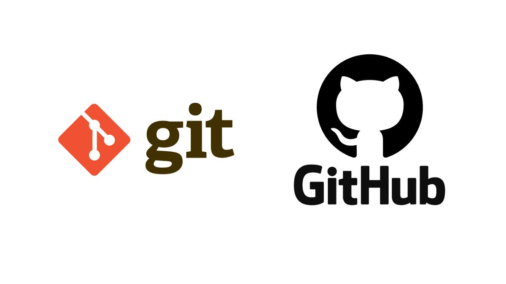

TAREFA 4: Introdução à Tecnologia da Informação
ASPECTOS ÉTICOS E LEGAIS DA COMUNICAÇÃO EM SITES
A presente pesquisa trata dos aspectos éticos e legais pertinentes ao acesso e uso das informações de websites arquivados. O arquivamento da web é um processo que deve ser pensado de forma sistêmica, incluindo metodologia de coleta dos dados e estabelecimento de políticas. Dentre as etapas desse processo, está o acesso e o uso da informação, que envolve aspectos sociais (privacidade) e legais (direitos autorais).
GESTÃO DE PROJETOS: O QUE É E UTILIDADES
A gestão de projetos ajuda as equipes a organizar, acompanhar e executar o trabalho circunscrito a um
projeto específico. Podemos considerar um projeto como uma coleção de tarefas necessárias para realizar
uma determinada meta.
Suas vantagens são:
- Mantém o trabalho e as metas organizadas em um único lugar;
- Elimina a confusão e aumenta a eficiência;
- Aumenta a eficácia da equipe;
- Alinha as comunicações.
GITHUB E GIT

O GitHub é uma plataforma de hospedagem de código-fonte e arquivos com controle de versão usando o Git. Ele permite
que programadores, utilitários ou qualquer usuário cadastrado na plataforma contribuam em projetos privados e/ou
Open Source de qualquer lugar do mundo. Tá, mas o que é o Git?
Git é um sistema de controle de versões distribuído, usado principalmente no desenvolvimento de software, mas
pode ser usado para registrar o histórico de edições de qualquer tipo de arquivo.
DOCKER E SUA FUNÇÃO

Um container Docker é um pacote de software com todas as dependências necessárias para executar um aplicativo específico. Todas as configurações e instruções para iniciar ou parar containers são ditadas pela imagem do Docker. Sempre que um usuário executa uma imagem, um novo container é criado.